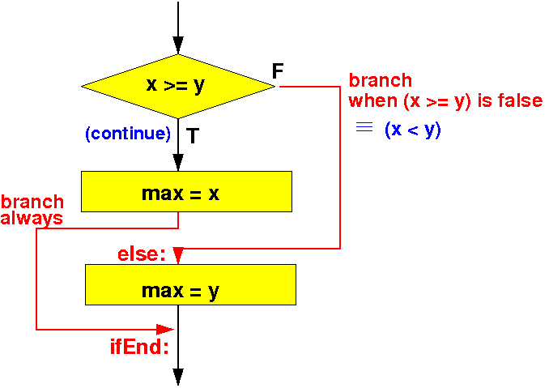

- Syntax:
if ( condition ) statement1; else statement2;Meaning:
- If condition is
true, then
program control is:
- Execute statement1
- Continue with the statement following the if-else statement
- If condition is
false, then
program control is:
- Execute statement2
- Continue with the statement following the if-else statement
- If condition is
true, then
program control is:
- The program control given
of the if-else statement
as a flow chart is as follows:
Flow chart of the if-else statement if ( condition ) ----> | statement1; V else +--------------+ FALSE statement2; | condition |--------+ +--------------+ | | | | TRUE | | | V | statement1 | | | +---------+ | | | | +<---------------+ | | | V | statement2 | | | | +-------->+ | | V
- The assembler construct
that realizes (= implements)
the program control flow
of the if-else statement is
as follows:
Evaluate "condition" (with cmp) FALSE Branch on the FALSE outcome of "condition" to label A: ----+ | | | (TRUE) | | | V | "statement1" assembler code | | Branch (always) to label B: --------+ | | | | | A: "statement2" assembler code <--------------------------+ | | | | B: +<--------------------------+ | V
- Example: find the maximum of 2 integers
The following program fragment will store the larger value of x and y in the variable max:
int x; int y; int max; if ( x >= y ) max = x; else max = y;The flow chart of the above program is:
 The assembler code that implements this high level program is:
/* -------------------------------------------------- if ( x >= y ) max = x; else max = y; -------------------------------------------------- */ .text main: movw r0, #:lower16:x movt r0, #:upper16:x // r0 = addr(x) ldr r0, [r0] // r0 = x movw r1, #:lower16:y movt r1, #:upper16:y // r1 = addr(y) ldr r1, [r1] // r1 = y cmp r0, r1 // compare x ? y blt else // Branch to "else" if x < y // x >= y ---> max = x movw r2, #:lower16:max movt r2, #:upper16:max // r2 = addr(max) str r0, [r2] // max = x b ifEnd // Skip over the else part !!! else: // x < y ---> max = y movw r2, #:lower16:max movt r2, #:upper16:max // r2 = addr(max) str r1, [r2] // max = y ifEnd: /* -------------------------------------------------- Begin of the permanent program variables -------------------------------------------------- */ .data x: .4byte 7 // Try a value > y y: .4byte 10 max: .4byte 0 .end
- Example Program:
(Demo above code)

- Prog file: /home/cs255001/demo/asm/6-if/if-else1.s
How to run the program:
- To compile: as255 if-else1
- To run: use EGTAPI